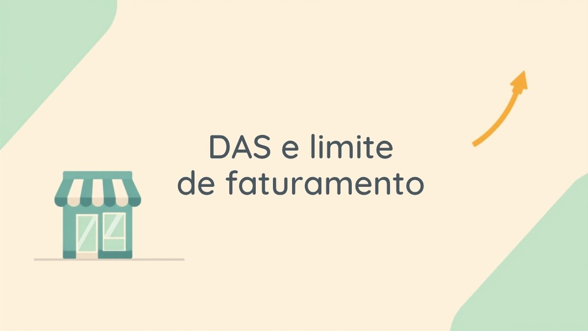

MEI em 2026: quanto pagar de DAS, limite de faturamento e o que muda se você ultrapassar

O Brasil já tem mais de 15 milhões de microempreendedores individuais registrados, e boa parte deles convive com as mesmas dúvidas todo mês: quanto exatamente eu pago de DAS? Até quanto posso faturar sem perder o MEI? O que acontece se eu passar do limite sem perceber? Como esses valores mudam todo ano com o salário mínimo, é fácil ficar com números desatualizados na cabeça.
Neste guia você vai encontrar os valores oficiais vigentes em 2026, direto da Receita Federal, e entender na prática o que fazer em cada situação — de abrir o CNPJ até ultrapassar o teto de faturamento.
O que é o MEI e quem pode se formalizar
O MEI (Microempreendedor Individual) é uma categoria simplificada de CNPJ criada para formalizar quem trabalha por conta própria — do cabeleireiro ao desenvolvedor freelancer, passando por vendedores, artesãos e prestadores de serviço em geral. A formalização dá acesso a emissão de nota fiscal, abertura de conta PJ, linhas de crédito empresarial e, principalmente, aos benefícios do INSS.
Para se tornar MEI, você precisa cumprir todos estes requisitos:
- Ter 18 anos ou mais (ou ser emancipado);
- Faturar, no ano, dentro do limite anual de R$ 81.000;
- Não ser sócio, titular ou administrador de outra empresa;
- Exercer uma atividade permitida na lista oficial de ocupações do MEI (nem toda profissão pode se enquadrar — profissões regulamentadas, como advogado ou médico, geralmente ficam de fora);
- Ter, no máximo, um funcionário registrado, recebendo o piso da categoria ou um salário mínimo.
Quanto custa o DAS do MEI em 2026
O DAS-MEI (Documento de Arrecadação do Simples Nacional) é o boleto único mensal que substitui vários tributos. Ele é formado por três partes, e o valor final depende do tipo de atividade que você exerce:
| Componente | Quem paga | Valor em 2026 |
|---|---|---|
| INSS | Todo MEI, sem exceção | R$ 81,05 (5% do salário mínimo de R$ 1.621,00) |
| ICMS | Atividades de comércio e indústria | R$ 1,00 |
| ISS | Atividades de prestação de serviço | R$ 5,00 |
Na prática, isso resulta em três valores finais possíveis, segundo os dados atualizados da Receita Federal para o Programa Gerador do DAS-MEI (PGMEI) em 2026:
| Tipo de atividade | Valor mensal do DAS |
|---|---|
| Comércio ou indústria | R$ 82,05 |
| Prestação de serviços | R$ 86,05 |
| Comércio e serviços juntos | R$ 87,05 |
Há também a categoria de MEI Caminhoneiro (transportador autônomo de cargas), que recolhe uma alíquota de INSS maior — 12% do salário mínimo, R$ 194,52 — por ter direito a uma aposentadoria diferenciada.
Regra prática: o DAS vence todo dia 20 do mês seguinte ao de referência (por exemplo, o DAS de janeiro vence em 20 de fevereiro). Se o dia 20 cair em fim de semana ou feriado, o prazo passa automaticamente para o próximo dia útil. Atraso gera juros e multa, e pagamentos em aberto podem suspender o acesso aos benefícios do INSS.
Limite de faturamento: até quanto você pode faturar
O teto de faturamento anual do MEI é de R$ 81.000, o que equivale a uma média de R$ 6.750 por mês — mas essa divisão é só uma referência. O que vale de verdade é o total somado ao longo do ano-calendário, e não o valor mês a mês: você pode faturar pouco em um mês e mais em outro, desde que a soma do ano fique dentro do limite.
Esse teto está em R$ 81.000 desde 2018 e, apesar de discussões em andamento no Congresso sobre reajustá-lo, nenhuma mudança havia sido sancionada em lei até a publicação deste texto — confirme sempre o valor vigente no Portal do Empreendedor (gov.br) antes de planejar seu faturamento do ano.
O que acontece se você ultrapassar o limite
Existem duas situações bem diferentes, e a diferença entre elas importa muito:
| Situação | O que acontece |
|---|---|
| Ultrapassou em até 20% (até R$ 97.200 no ano) | Sem multa. Você paga um DAS complementar sobre o excedente, calculado automaticamente na declaração anual, e continua como MEI até 31 de dezembro. A partir de janeiro do ano seguinte, passa automaticamente para Microempresa (ME), com tributação do Simples Nacional. |
| Ultrapassou mais de 20% | O desenquadramento do MEI é retroativo ao início do ano — ou seja, você é reclassificado como empresa comum desde janeiro, com recálculo de todos os tributos pelas regras do Simples Nacional, mais multa de até 20% e juros Selic sobre a diferença. |
Por isso, quem está perto do teto ao longo do ano deve acompanhar o faturamento acumulado de perto — muitos MEIs guardam entre 5% e 10% do valor faturado acima do limite para não serem pegos de surpresa pelo DAS complementar.
Contratação de funcionário: até onde o MEI pode ir
O MEI pode ter um único funcionário registrado, que precisa receber o piso salarial da categoria profissional dele ou, na ausência de piso definido, um salário mínimo. Esse funcionário tem os mesmos direitos trabalhistas de qualquer empregado CLT: FGTS, férias, 13º salário e demais garantias — o MEI, aqui, assume as mesmas obrigações de qualquer empregador.
As obrigações anuais: DASN-SIMEI
Além do DAS mensal, todo MEI precisa entregar, uma vez por ano, a Declaração Anual do Simples Nacional (DASN-SIMEI), informando o faturamento total do ano anterior e se houve contratação de funcionário. O prazo vai até 31 de maio de cada ano, referente ao faturamento do ano-calendário anterior. Quem não entrega fica sujeito a multa e pode ter o CNPJ baixado de ofício por inatividade.
É também nessa declaração que se calcula, automaticamente, o DAS complementar de quem ultrapassou o limite de faturamento dentro da margem de 20%.
Os benefícios do INSS que o MEI tem direito
A contribuição de 5% embutida no DAS garante acesso a benefícios previdenciários, mas com uma limitação importante: ela conta como carência para benefícios por idade e por incapacidade, mas não dá direito à aposentadoria por tempo de contribuição — para isso, seria preciso complementar voluntariamente a contribuição até 20% do salário mínimo. Com a contribuição padrão do MEI, você tem direito a:
- Aposentadoria por idade;
- Auxílio por incapacidade temporária (antigo auxílio-doença);
- Salário-maternidade;
- Pensão por morte para dependentes;
- Auxílio-reclusão, em caso de prisão do titular.
Vale lembrar que o MEI também está sujeito ao imposto de renda pessoa física, dependendo do que retira da empresa (pró-labore ou lucro distribuído) e dos demais critérios de obrigatoriedade — o assunto está detalhado no nosso guia de imposto de renda.
Como abrir um MEI
- Acesse o Portal Gov.br e procure o serviço "Formalize-se" (Portal do Empreendedor);
- Entre com sua conta gov.br e informe CPF, dados pessoais e o endereço onde a atividade será exercida;
- Escolha a atividade principal (e até 15 atividades secundárias) na lista de ocupações permitidas ao MEI;
- Confirme os dados e emita o Certificado da Condição de Microempreendedor Individual (CCMEI) — o CNPJ costuma sair na hora;
- Gere o primeiro DAS pelo aplicativo ou site do MEI e programe os pagamentos mensais.
Perguntas rápidas
MEI pode ter mais de um CNPJ?
Não. É permitido apenas um CNPJ MEI por CPF, e a pessoa não pode ser sócia de outra empresa ao mesmo tempo.
MEI que fatura pouco também precisa pagar o DAS integral?
Sim. O valor do DAS não é proporcional ao faturamento — é fixo, independente de quanto você faturou naquele mês, mesmo que tenha sido zero.
Dá para sair do MEI quando quiser?
Sim, o cancelamento pode ser feito a qualquer momento pelo Portal do Empreendedor, mas é preciso estar em dia com o DAS e entregar a DASN-SIMEI referente ao período em que a empresa esteve ativa, para evitar pendências no CPF do titular.
O dinheiro que entra no MEI é o mesmo da minha conta pessoal?
Não deveriam se misturar. O ideal é manter uma conta PJ separada para a atividade do MEI — isso facilita o controle do faturamento acumulado no ano (essencial para não estourar o limite) e deixa mais claro quanto, de fato, sobra para você.
Formalizar vale a pena?
Para quem já trabalha por conta própria de forma recorrente, o MEI costuma compensar: o custo mensal é baixo frente aos benefícios (nota fiscal, crédito PJ, INSS), e a formalização também ajuda a manter as finanças organizadas — separar o que é da atividade e o que é pessoal é um passo parecido com o de mapear as próprias dívidas antes de montar um plano financeiro. Ter um bom score de crédito como pessoa física também facilita o acesso a linhas específicas para MEI, já que muitos bancos ainda avaliam o CPF do titular na hora de liberar crédito para o CNPJ. E, como a renda do autônomo costuma variar mais mês a mês que a de um salário fixo, vale reforçar ainda mais a reserva de emergência — ela é o colchão que segura os meses de faturamento mais fraco sem comprometer o DAS ou as contas pessoais.